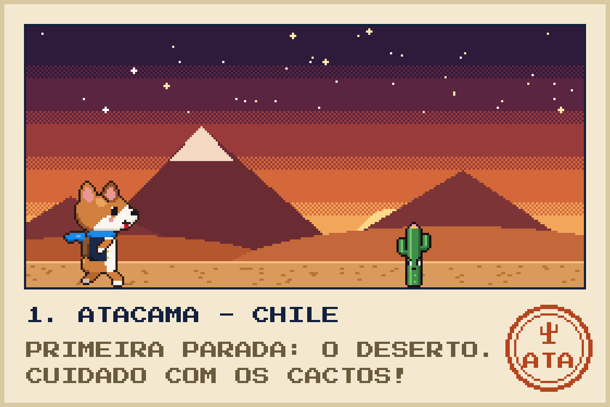
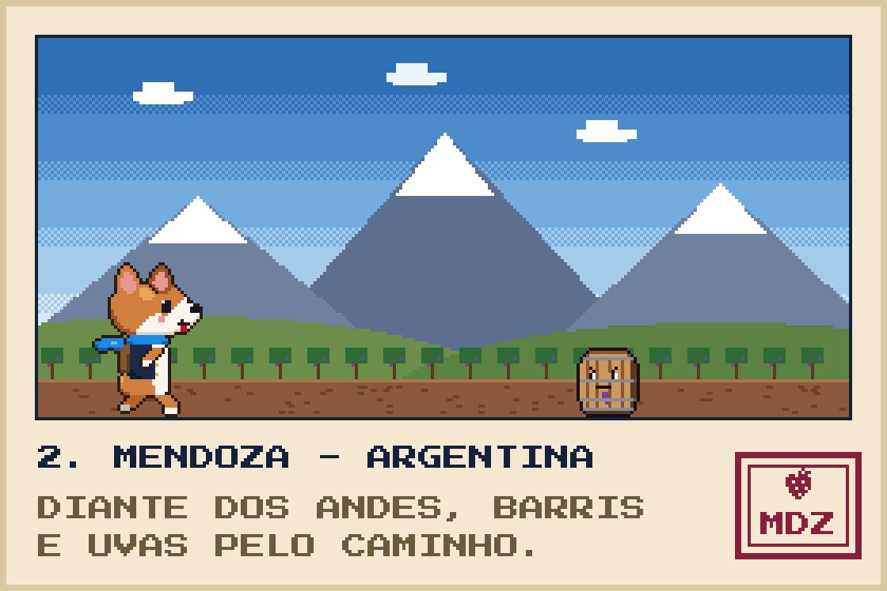
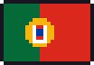
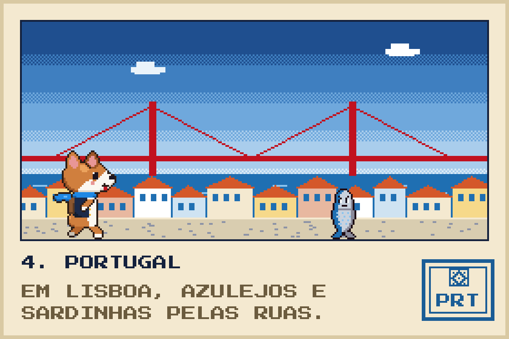
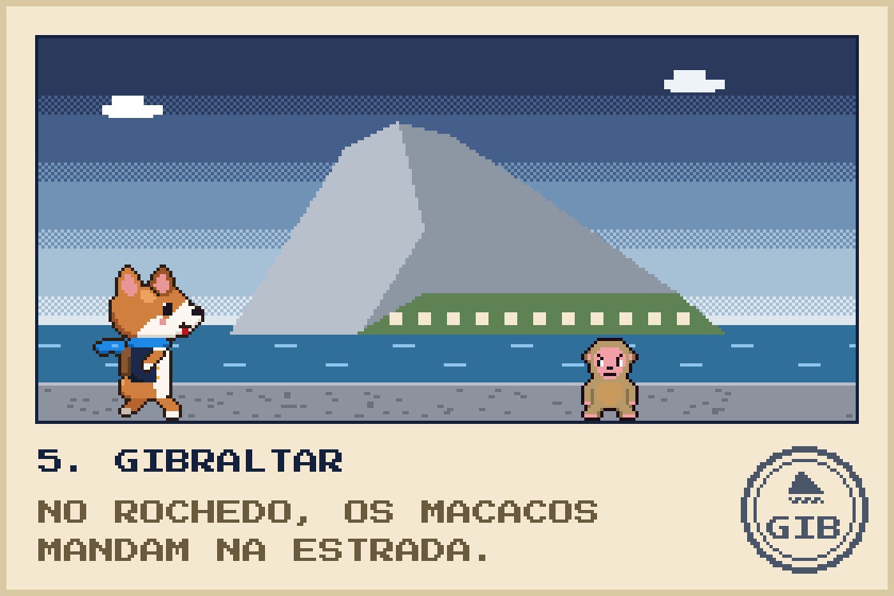
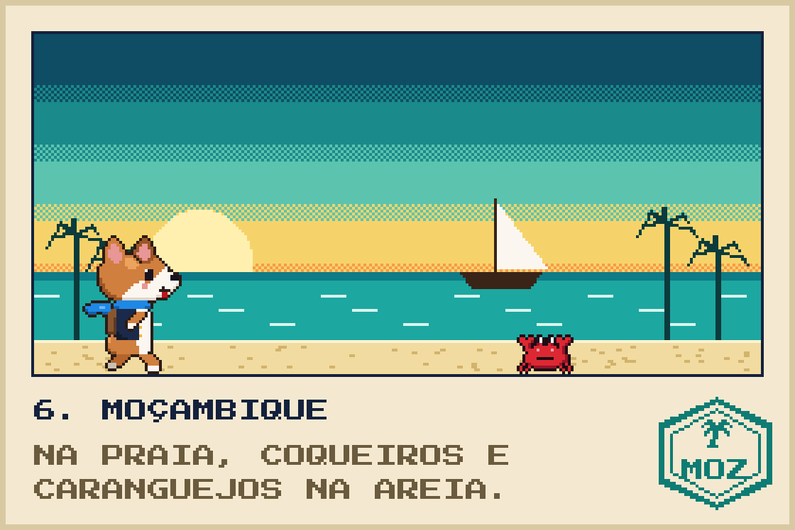
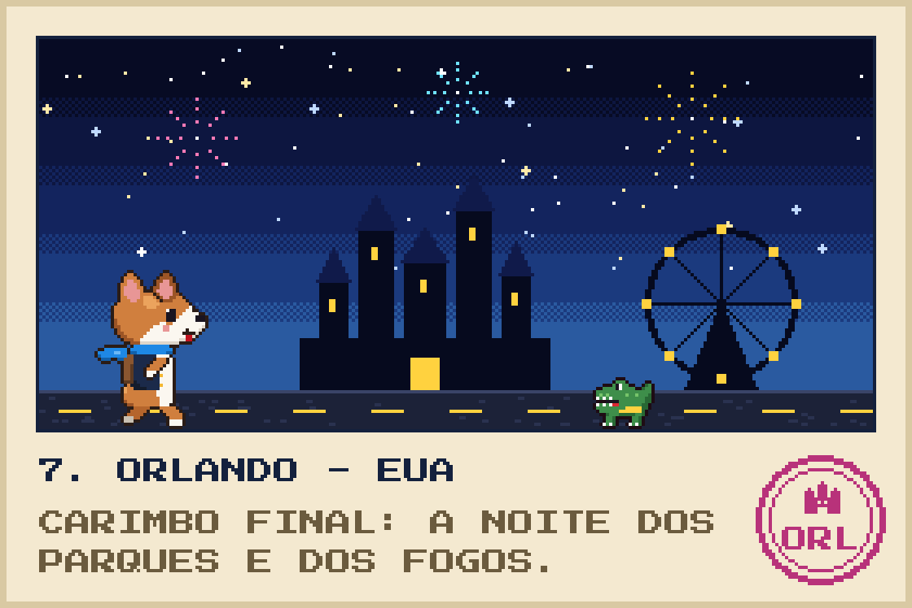

Sobre mim

Fernando Mateus
7 países, 3 continentes e muita história pra contar.
O caminho até aqui
Olhar para o passado é um exercício raro para mim. Quando paro, percebo que muitas lembranças não nascem boas nem ruins: elas ganham essa cor pelo que trazem depois. Foi com esse olhar que organizei as viagens abaixo.

Atacama, Chile
nov/2016 a fev/2017Nas férias do ensino médio, fui morar num vilarejo no meio do deserto para trabalhar numa agência de turismo. Lavava pratos, cozinhava, organizava passeios. Uma colombiana me ensinou espanhol e um canadense me ajudou no inglês. Subi vulcões e pedalei sozinho pelo deserto ouvindo podcasts. A paz daquelas paisagens é inigualável, mas a solidão de passar meses longe de tudo também deixou marca.
Vale a visita: Vale da Lua no pôr do sol, Lagunas Baltinache, Aldea de Tulor e observação de estrelas.
Dica: o mal da altitude é comum. Beba muita água e deixe os vulcões para depois de alguns dias de adaptação.


Mendoza, Argentina
dez/2023 a jan/2024Viagem com a família da Katherine, entre os melhores restaurantes e as vinícolas da região. No dia da chegada, bati o carro alugado. O prejuízo foi pequeno, mas o susto acompanhou o resto da viagem.
Vale a visita: vinícolas de Maipú e do Valle de Uco, o Aconcágua e a represa de Potrerillos, e a Plaza Independencia com o Mercado Central.
Dica: reserve as visitas às vinícolas com antecedência e, se for dirigir, combine quem não vai beber.


Espanha
jun a jul/2024Uma prima que mora na Espanha me convidou para o casamento dela. Eu nunca tinha visitado aquela parte da família e decidi ir. Foram quarenta dias na Europa, com calor de até 48 graus, passando por Madrid, Sevilha, Utrera, Cádiz e Ronda: cidades com mais de dois mil anos de história, onde entendi por que parte da minha família escolheu ficar por lá.
Vale a visita: Museu do Prado e Palácio Real (Madrid), Plaza de España e Real Alcázar (Sevilha), Puente Nuevo (Ronda) e o centro histórico de Cádiz.
Dica: no verão, passeie cedo e no fim da tarde, e compre o ingresso do Alcázar antes.


Portugal
jul/2024Em Portugal, comi peixe todos os dias, provei caracóis e fiquei impressionado com as paisagens de Lisboa, Portimão e Albufeira.
Vale a visita: Torre de Belém e Mosteiro dos Jerónimos, o bairro de Alfama, a Praia da Rocha em Portimão e a gruta de Benagil.
Dica: prove o pastel de Belém na fonte e faça o passeio de barco pelas grutas do Algarve.

Gibraltar
jul a ago/2024Subi o Rochedo de Gibraltar e vi de perto os famosos macacos, divertidos e perigosos. Lá de cima, tirei uma foto com três países ao mesmo tempo: Gibraltar, Espanha e Marrocos, do outro lado do estreito.
Vale a visita: teleférico até o alto do Rochedo, Apes' Den (os macacos), Great Siege Tunnels, St. Michael's Cave e Europa Point, com vista para o Marrocos.
Dica: os macacos pegam comida, bolsas e celulares. Guarde tudo e leve o passaporte para cruzar a fronteira.


Maputo e Ponta do Ouro, Moçambique
ago a out/2024Consegui um intercâmbio na Universidade Pedagógica de Maputo. O choque cultural foi imenso. O professor que me recebeu me ensinou a valorizar o próprio esforço e a identificar onde ele é necessário. Lá, aceitei dar uma palestra sobre disciplina para alunos de uma escola técnica. Esperava algo pequeno e encontrei milhares de pessoas e autoridades. Estava nervoso, mas cumpri meu papel.
Vale a visita: Mercado Central, Fortaleza e Catedral de Nossa Senhora da Conceição (Maputo), um passeio a pé pelo bairro da Mafalala e o mergulho com golfinhos na Ponta do Ouro.
Dica: leve o Certificado Internacional de Vacinação contra febre amarela, que pode ser exigido de quem chega do Brasil.


Orlando, Estados Unidos
set/2026Quando criança, eu sonhava com a Disney e a Universal. Depois de adulto, achei que era coisa de criança e tirei da lista. A Katherine já tinha ido e me garantiu que valia a pena, então dei uma chance. Foi uma das melhores decisões que tomei: o lugar é mágico e cada detalhe é uma descoberta. A experiência mais radical foi a VelociCoaster, na Universal.
Vale a visita: Magic Kingdom, EPCOT, Islands of Adventure (onde fica a VelociCoaster) e o Kennedy Space Center.
Dica: compre os ingressos antes, chegue na abertura e use o app de cada parque para acompanhar as filas.

O que as viagens me ensinaram
-
Valores
Curiosidade e esforço
Aprender tem valor prático: foi assim com o inglês no jogo, o espanhol no deserto e cada idioma depois. E o esforço só vale quando é colocado no lugar certo.
-
Dificuldade
Ficar longe de casa
No Atacama e em Moçambique, a distância da família pesou. Aprendi a viver bem com a saudade sem deixar que ela me impedisse de ir.
-
Superação
A palestra em Maputo
Eu esperava uma conversa informal e encontrei milhares de pessoas. Mesmo nervoso, fiz a apresentação sem falhas e ela foi elogiada pelos professores.
-
Gratidão
À minha mãe, que me ensinou o primeiro inglês. À Katherine, que me apoia, me cobra e me empurra para cada oportunidade. À minha família na Espanha, que me recebeu, e ao professor que me acolheu em Maputo.